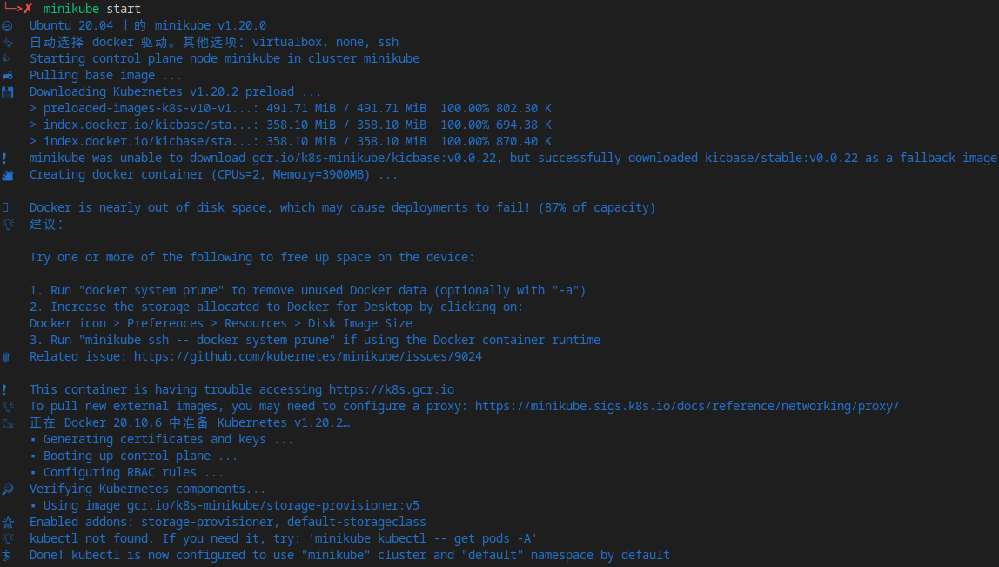

TDengine 在 Kubernetes 上的部署
- 作者：Huo Linhe lhhuo@taosdata.com
- 更新日期：2021-06-09 16:24:00
为了支持TDengine在Kubernetes上的部署，特编写此文档。此文档完全开源，源码托管在 taosdata/TDengine-Operator，并欢迎所有人对此文档进行修改，您可以直接提交Pull Request，也可以添加 Issue，任何一种方式都将是我们的荣幸。TDengine完善离不开社区的共同努力，谢谢！
在本文档中，我们将从部署一套Kubernetes环境开始，介绍如何启动Kubernetes，并在Kubernetes上从头部署TDengine集群，简单介绍如何在K8s环境中进行TDengine集群的扩容和缩容，其中我们未能完整支持的地方也会有说明，可能出现问题的操作也作了简要的提示。
如果在实际操作过程中遇到问题，您总是可以通过官方微信 tdengine 联系到我们。
从Kubernetes开始
在Wikipedia上的Kubernetes简介如此：
Kubernetes（常简称为K8s）是用于自动部署、扩展和管理「容器化（containerized）应用程序」的开源系统。 該系統由Google设计并捐赠给Cloud Native Computing Foundation（今属Linux基金会）来使用。
鉴于Kubernetes已经是目前集群编排和自动化部署的事实标准，TDengine 将会逐步推进TDengine Server集群及相关生态工具在Kubernetes上部署及应用的支持。
在进入下一步之前，希望你对Kubernetes有了一定的了解，并对kubectl基本命令用法有一定的基础（如果没有，请按照提示进行操作即可，但建议您了解更多），并有一个可用的集群环境进行测试。
如果当前没有集群环境，可参考下一节的安装指导，使用Minikube或Rancher进行Kubebetes的安装。
使用Minikube尝鲜Kubernetes
本文档仅适用于Linux，其他平台请参考官方文档。
安装
首先，我们需要下载并安装Minikube：
curl -LO https://storage.googleapis.com/minikube/releases/latest/minikube-linux-amd64
sudo install minikube-linux-amd64 /usr/local/bin/minikube
Start
启动一个Minikube实例：
minikube start
Minikube将使用Docker（需要提前安装好，安装Docker请参考Docker 官方文档）创建一个Kubernetes环境：

kubectl 命令
在 minikube 中，可以使用minikube kubectl命令使用kubectl，以下是获取所有POD资源的示例命令：
minikube kubectl -- get pods -A
我们仍然可以正常安装和使用独立的kubectl命令：
curl -LO "https://dl.k8s.io/release/$(curl -L -s https://dl.k8s.io/release/stable.txt)/bin/linux/amd64/kubectl"
sudo install kubectl /usr/local/bin/kubectl
以上minikube kubectl命令的等价版本如下：
kubectl get pods -A
获取存储类名称：
kubectl get sc
Minikube 默认情况下会启动名为 standard 的默认存储类，存储类的名称我们将会在部署TDengine时用到。
仪表盘
Minikube 提供了Kubernetes仪表盘，使用如下命令启动：
minikube dashboard
将会在浏览器打开仪表盘网址，用于查看资源：

使用Rancher安装Kubernetes
如果Rancher安装方式发生变化，请始终参考Rancher官方文档。
安装RancherD
RancherD是Rancher最新支持的一种部署方案，运行以下命令来安装RancherD以进行Rancher + Kubernetes的部署。
curl -sfL https://get.rancher.io | sh -
如果遇到网络问题，可以先行下载rancherd的安装包再进行手动安装。
# fill the proxy url if you use one
export https_proxy=
curl -s https://api.github.com/repos/rancher/rancher/releases/latest \
|jq '.assets[] |
select(.browser_download_url|contains("rancherd-amd64.tar.gz")) |
.browser_download_url' -r \
|wget -ci -
tar xzf rancherd-amd64.tar.gz -C /usr/local
之后只需要启动 rancherd-server 服务就可以得到一个Kubernetes环境。
systemctl enable rancherd-server
systemctl start rancherd-server
查看Kubernetes安装状态：
journalctl -fu rancherd-server
最后看到 successfully，说明Kubernetes已安装完成。
"Event occurred" object="cn120" kind="Node" apiVersion="v1" \
type="Normal" reason="Synced" message="Node synced successfully"
使用kubectl
集群启动后，配置KUBECONFIG，并将rke2路径加入环境变量以使用kubectl命令：
export KUBECONFIG=/etc/rancher/rke2/rke2.yaml
export PATH=$PATH:/var/lib/rancher/rke2/bin
查看Rancher部署状态：
kubectl get daemonset rancher -n cattle-system
kubectl get pod -n cattle-system
Result:
NAME DESIRED CURRENT READY UP-TO-DATE AVAILABLE NODE SELECTOR AGE
rancher 1 1 1 1 1 node-role.kubernetes.io/master=true 36m
NAME READY STATUS RESTARTS AGE
helm-operation-5c2wd 0/2 Completed 0 34m
helm-operation-bdxlx 0/2 Completed 0 33m
helm-operation-cgcvr 0/2 Completed 0 34m
helm-operation-cj4g4 0/2 Completed 0 33m
helm-operation-hq282 0/2 Completed 0 34m
helm-operation-lp5nn 0/2 Completed 0 33m
rancher-kf592 1/1 Running 0 36m
rancher-webhook-65f558c486-vrjz9 1/1 Running 0 33m
设置Rancher用户名及密码
rancherd reset-admin
你会看到如下的结果：
INFO[0000] Server URL: https://*.*.*.*:8443
INFO[0000] Default admin and password created. Username: admin, Password: ****
打开:8443的网址，可以看到登录页面：

输入上面设置的用户名和密码，进入Rancher仪表盘。

高可用设置
获取集群当前的token： /var/lib/rancher/rke2/server/node-token.
在其他节点上安装rancherd-server。
tar xzf rancherd-amd64.tar.gz -C /usr/local
systemctl enable rancherd-server
创建RKE2配置所在目录：
mkdir -p /etc/rancher/rke2
添加配置文件 /etc/rancher/rke2/config.yaml.
server: https://192.168.60.120:9345
token: <the token in /var/lib/rancher/rke2/server/node-token>
server 为第一个启动的节点地址加端口号9345，token为上面从文件获取的token值。
启动rancherd-server服务，就可以将此节点加入Kubernetes集群。
systemctl start rancherd-server
journalctl -fu rancherd-server
其他节点可复制配置和操作，直到所有节点都加入集群。
我们使用3个节点，输入 kubectl get daemonset rancher -n cattle-system查看当前启动的rancher节点数量：
NAME DESIRED CURRENT READY UP-TO-DATE AVAILABLE NODE SELECTOR AGE
rancher 3 3 3 3 3 node-role.kubernetes.io/master=true 129m
至此，一个三节点的高可用Rancher + Kubernetes集群已经安装成功。
Kubernetes中的存储类
Kubernetes 使用 StorageClass （存储类）做持久化存储的接口。
使用Ceph RBD存储
此处我们将使用Ceph存储作为TDengine的持久化存储卷的提供者。
Ceph集群准备
首先，在Ceph中创建一个存储池(pool)并初始化。
ceph osd pool create kubernetes
rbd pool init kubernetes
为Kubernetes创建用户：
ceph auth get-or-create client.kubernetes \
mon 'profile rbd' \
osd 'profile rbd pool=kubernetes' \
mgr 'profile rbd pool=kubernetes'
得到Client Token：
[client.kubernetes]
key = <xxx>
使用 ceph mon dump 获取Ceph集群的fsid和Monitor端点如下所示：
fsid 6177c398-f449-4d66-a00b-27cad7cd076f
last_changed 2020-09-09T22:06:52.339219+0800
created 2018-11-15T12:12:01.363568+0800
min_mon_release 15 (octopus)
0: [v2:192.168.60.90:3300/0,v1:192.168.60.90:6789/0] mon.dn0
1: [v2:192.168.60.206:3300/0,v1:192.168.60.206:6789/0] mon.mds2
2: [v2:192.168.60.207:3300/0,v1:192.168.60.207:6789/0] mon.mds1
3: [v2:192.168.60.208:3300/0,v1:192.168.60.208:6789/0] mon.admin
4: [v2:192.168.60.209:3300/0,v1:192.168.60.209:6789/0] mon.mon2
5: [v2:192.168.60.210:3300/0,v1:192.168.60.210:6789/0] mon.mon1
添加配置文件
将fsid值作为 clusterID, v1:端点作为 monitors值创建文件csi-config-map.yaml：
---
apiVersion: v1
kind: ConfigMap
metadata:
name: ceph-csi-config
data:
config.json: |-
[{
"clusterID": "6177c398-f449-4d66-a00b-27cad7cd076f",
"monitors":[
"192.168.60.90:6789",
"192.168.60.206:6789",
"192.168.60.207:6789",
"192.168.60.208:6789",
"192.168.60.209:6789",
"192.168.60.210:6789"
}]
添加到Kubernetes：
kubectl apply -f csi-config-map.yaml
创建secret文件 csi-rbd-secret.yaml，将之前获取的Kubernetes用户名和Token值吸入文件。
---
apiVersion: v1
kind: Secret
metadata:
name: csi-rbd-secret
namespace: default
stringData:
userID: kubernetes
userKey: AQC1Oq5gnLcWGhAACiFyohnB6n6Fovd/vNbqhw==
将Secret添加到集群：
kubectl apply -f csi-rbd-secret.yaml
添加CEPH CSI接口支持
从Ceph官方仓库获取 CSI RBAC 配置文件。
kubectl apply -f https://raw.githubusercontent.com/ceph/ceph-csi/master/deploy/rbd/kubernetes/csi-provisioner-rbac.yaml
可以看到如下运行结果：
serviceaccount/rbd-csi-provisioner created
clusterrole.rbac.authorization.k8s.io/rbd-external-provisioner-runner created
clusterrolebinding.rbac.authorization.k8s.io/rbd-csi-provisioner-role created
role.rbac.authorization.k8s.io/rbd-external-provisioner-cfg created
rolebinding.rbac.authorization.k8s.io/rbd-csi-provisioner-role-cfg created
为Ceph CSI 接口创建 nodeplugin :
kubectl apply -f https://raw.githubusercontent.com/ceph/ceph-csi/master/deploy/rbd/kubernetes/csi-nodeplugin-rbac.yaml
添加成功提示：
serviceaccount/rbd-csi-nodeplugin created
clusterrole.rbac.authorization.k8s.io/rbd-csi-nodeplugin created
clusterrolebinding.rbac.authorization.k8s.io/rbd-csi-nodeplugin created
将 Ceph RBD 作为存储供应者：
wget https://raw.githubusercontent.com/ceph/ceph-csi/master/deploy/rbd/kubernetes/csi-rbdplugin-provisioner.yaml
wget https://raw.githubusercontent.com/ceph/ceph-csi/master/deploy/rbd/kubernetes/csi-rbdplugin.yaml
# 国内访问 k8s.gcr.io 有问题，我找了一个替换镜像：lvciso
sed -i 's#k8s.gcr.io/sig-storage#lvcisco#' csi-rbdplugin*.yaml
kubectl apply -f csi-rbdplugin-provisioner.yaml
kubectl apply -f csi-rbdplugin.yaml
结果如下：
service/csi-rbdplugin-provisioner created
deployment.apps/csi-rbdplugin-provisioner created
daemonset.apps/csi-rbdplugin unchanged
service/csi-metrics-rbdplugin unchanged
这里可能需要添加一个 ceph-csi-encryption-kms-config 配置，否则会有报错).
---
apiVersion: v1
kind: ConfigMap
data:
config.json: |-
{
"vault-test": {
"encryptionKMSType": "vault",
"vaultAddress": "http://vault.default.svc.cluster.local:8200",
"vaultAuthPath": "/v1/auth/kubernetes/login",
"vaultRole": "csi-kubernetes",
"vaultPassphraseRoot": "/v1/secret",
"vaultPassphrasePath": "ceph-csi/",
"vaultCAVerify": "false"
},
"vault-tokens-test": {
"encryptionKMSType": "vaulttokens",
"vaultAddress": "http://vault.default.svc.cluster.local:8200",
"vaultBackendPath": "secret/",
"vaultTLSServerName": "vault.default.svc.cluster.local",
"vaultCAVerify": "false",
"tenantConfigName": "ceph-csi-kms-config",
"tenantTokenName": "ceph-csi-kms-token",
"tenants": {
"my-app": {
"vaultAddress": "https://vault.example.com",
"vaultCAVerify": "true"
},
"an-other-app": {
"tenantTokenName": "storage-encryption-token"
}
}
}
}
metadata:
name: ceph-csi-encryption-kms-config
添加后可正常运行：
kubectl apply -f kms-config.yaml
添加存储类
添加CSI接口后，需要创建存储类才能在Kubernetes集群中使用：
cat <<EOF > csi-rbd-sc.yaml
---
apiVersion: storage.k8s.io/v1
kind: StorageClass
metadata:
name: csi-rbd-sc
provisioner: rbd.csi.ceph.com
parameters:
clusterID: 6177c398-f449-4d66-a00b-27cad7cd076f
pool: kubernetes
imageFeatures: layering
csi.storage.k8s.io/provisioner-secret-name: csi-rbd-secret
csi.storage.k8s.io/provisioner-secret-namespace: default
csi.storage.k8s.io/controller-expand-secret-name: csi-rbd-secret
csi.storage.k8s.io/controller-expand-secret-namespace: default
csi.storage.k8s.io/node-stage-secret-name: csi-rbd-secret
csi.storage.k8s.io/node-stage-secret-namespace: default
reclaimPolicy: Delete
allowVolumeExpansion: true
mountOptions:
- discard
EOF
kubectl apply -f csi-rbd-sc.yaml
创建PVC（持久化卷声明）
支持两种卷声明方式： 块存储或文件存储。
Ceph RBD块存储
cat <<EOF > raw-block-pvc.yaml
---
apiVersion: v1
kind: PersistentVolumeClaim
metadata:
name: raw-block-pvc
spec:
accessModes:
- ReadWriteOnce
volumeMode: Block
resources:
requests:
storage: 1Gi
storageClassName: csi-rbd-sc
EOF
kubectl apply -f raw-block-pvc.yaml
cat <<EOF > raw-block-pod.yaml
---
apiVersion: v1
kind: Pod
metadata:
name: pod-with-raw-block-volume
spec:
containers:
- name: fc-container
image: fedora:26
command: ["/bin/sh", "-c"]
args: ["tail -f /dev/null"]
volumeDevices:
- name: data
devicePath: /dev/xvda
volumes:
- name: data
persistentVolumeClaim:
claimName: raw-block-pvc
EOF
kubectl apply -f raw-block-pod.yaml
文件存储
文件存储是最常见的使用方式，TDengine将使用这种方式创建持久化存储卷。
cat <<EOF > pvc.yaml
---
apiVersion: v1
kind: PersistentVolumeClaim
metadata:
name: rbd-pvc
spec:
accessModes:
- ReadWriteOnce
volumeMode: Filesystem
resources:
requests:
storage: 1Gi
storageClassName: csi-rbd-sc
EOF
kubectl apply -f pvc.yaml
cat <<EOF > pod.yaml
---
apiVersion: v1
kind: Pod
metadata:
name: csi-rbd-demo-pod
spec:
containers:
- name: web-server
image: nginx
volumeMounts:
- name: nginx-test
mountPath: /usr/share/nginx/html
volumes:
- name: nginx-test
persistentVolumeClaim:
claimName: rbd-pvc
readOnly: false
EOF
kubectl apply -f pod.yaml
开始使用Kubernetes
现在我们可以开始用Kubernetes了。
StatefulSets
starter/stateful-nginx.yaml:
apiVersion: v1
kind: Service
metadata:
name: nginx
labels:
app: nginx
spec:
ports:
- port: 80
name: web
clusterIP: None
selector:
app: nginx
---
apiVersion: apps/v1
kind: StatefulSet
metadata:
name: web
spec:
selector:
matchLabels:
app: nginx # has to match .spec.template.metadata.labels
serviceName: "nginx"
replicas: 3 # by default is 1
template:
metadata:
labels:
app: nginx # has to match .spec.selector.matchLabels
spec:
terminationGracePeriodSeconds: 10
containers:
- name: nginx
image: nginx
ports:
- containerPort: 80
name: web
volumeMounts:
- name: www
mountPath: /usr/share/nginx/html
volumeClaimTemplates:
- metadata:
name: www
spec:
accessModes: [ "ReadWriteOnce" ]
storageClassName: "csi-rbd-sc"
resources:
requests:
storage: 1Gi
kubectl apply -f starter/stateful-nginx.yaml
将ConfigMap映射为Volume
---
apiVersion: v1
kind: ConfigMap
metadata:
name: starter-config-map
data:
debugFlag: 135
keep: 3650
---
apiVersion: v1
kind: Pod
metadata:
name: starter-config-map-as-volume
spec:
containers:
- name: test-container
image: busybox
command: [ "/bin/sh", "-c", "ls /etc/config/" ]
volumeMounts:
- name: starter-config-map-vol
mountPath: /etc/config
volumes:
- name: starter-config-map-vol
configMap:
# Provide the name of the ConfigMap containing the files you want
# to add to the container
name: starter-config-map
restartPolicy: Never
将ConfigMap映射为环境变量
如果需要将ConfigMap映射为环境变量，data中的值需要始终使用字符串类型：
---
apiVersion: v1
kind: ConfigMap
metadata:
name: starter-config-map-env
data:
debugFlag: "135"
keep: "3650"
---
apiVersion: v1
kind: Pod
metadata:
name: starter-config-map-as-env
spec:
containers:
- name: test-container
image: busybox
command: [ "/bin/sh", "-c", "export" ]
envFrom:
- configMapRef:
name: starter-config-map-env
restartPolicy: Never
在TDengine中，将使用环境变量的方式导入配置。
在Kubernetes上部署TDengine集群
在本章节，我们希望在第一小节中介绍如何使用YAML文件一步一步从头创建一个TDengine集群，并重点介绍Kubernetes环境下TDengine的常用操作，您可以了解到TDengine在Kubernetes集群中的部署机制。在第二小节中介绍如何使用Helm进行TDengine的部署，建议在生产环境中使用Helm Chart部署方式。我们会持续更新TDengine Chart，敬请关注。
一步一步创建TDengine集群
ConfigMap 配置
为TDengine创建 taoscfg.yaml，此文件中的配置将作为环境变量传入TDengine镜像，更新此配置将导致所有TDengine POD重启。
---
apiVersion: v1
kind: ConfigMap
metadata:
name: taoscfg
labels:
app: tdengine
data:
CLUSTER: "1"
TAOS_KEEP: "3650"
TAOS_DEBUG_FLAG: "135"
Service 服务
创建一个 service 配置文件：taosd-service.yaml，服务名称 metadata.name (此处为 "taosd") 将在下一步中使用到。添加TDengine所用到的所有端口：
---
apiVersion: v1
kind: Service
metadata:
name: "taosd"
labels:
app: "tdengine"
spec:
ports:
- name: tcp6030
protocol: "TCP"
port: 6030
- name: tcp6035
protocol: "TCP"
port: 6035
- name: tcp6041
protocol: "TCP"
port: 6041
- name: udp6030
protocol: "UDP"
port: 6030
- name: udp6031
protocol: "UDP"
port: 6031
- name: udp6032
protocol: "UDP"
port: 6032
- name: udp6033
protocol: "UDP"
port: 6033
- name: udp6034
protocol: "UDP"
port: 6034
- name: udp6035
protocol: "UDP"
port: 6035
- name: udp6036
protocol: "UDP"
port: 6036
- name: udp6037
protocol: "UDP"
port: 6037
- name: udp6038
protocol: "UDP"
port: 6038
- name: udp6039
protocol: "UDP"
port: 6039
- name: udp6040
protocol: "UDP"
port: 6040
selector:
app: "tdengine"
StatefulSet 有状态服务
根据Kubernetes对各类部署的说明，我们将使用 StatefulSet 作为TDengine 的服务类型，创建文件tdengine.yaml ：
---
apiVersion: apps/v1
kind: StatefulSet
metadata:
name: "tdengine"
labels:
app: "tdengine"
spec:
serviceName: "taosd"
replicas: 2
updateStrategy:
type: RollingUpdate
selector:
matchLabels:
app: "tdengine"
template:
metadata:
name: "tdengine"
labels:
app: "tdengine"
spec:
containers:
- name: "tdengine"
image: "zitsen/taosd:develop"
imagePullPolicy: "Always"
envFrom:
- configMapRef:
name: taoscfg
ports:
- name: tcp6030
protocol: "TCP"
containerPort: 6030
- name: tcp6035
protocol: "TCP"
containerPort: 6035
- name: tcp6041
protocol: "TCP"
containerPort: 6041
- name: udp6030
protocol: "UDP"
containerPort: 6030
- name: udp6031
protocol: "UDP"
containerPort: 6031
- name: udp6032
protocol: "UDP"
containerPort: 6032
- name: udp6033
protocol: "UDP"
containerPort: 6033
- name: udp6034
protocol: "UDP"
containerPort: 6034
- name: udp6035
protocol: "UDP"
containerPort: 6035
- name: udp6036
protocol: "UDP"
containerPort: 6036
- name: udp6037
protocol: "UDP"
containerPort: 6037
- name: udp6038
protocol: "UDP"
containerPort: 6038
- name: udp6039
protocol: "UDP"
containerPort: 6039
- name: udp6040
protocol: "UDP"
containerPort: 6040
env:
# POD_NAME for FQDN config
- name: POD_NAME
valueFrom:
fieldRef:
fieldPath: metadata.name
# SERVICE_NAME and NAMESPACE for fqdn resolve
- name: SERVICE_NAME
value: "taosd"
- name: STS_NAME
value: "tdengine"
- name: STS_NAMESPACE
valueFrom:
fieldRef:
fieldPath: metadata.namespace
# TZ for timezone settings, we recommend to always set it.
- name: TZ
value: "Asia/Shanghai"
# TAOS_ prefix will configured in taos.cfg, strip prefix and camelCase.
- name: TAOS_SERVER_PORT
value: "6030"
# Must set if you want a cluster.
- name: TAOS_FIRST_EP
value: "$(STS_NAME)-0.$(SERVICE_NAME).$(STS_NAMESPACE).svc.cluster.local:$(TAOS_SERVER_PORT)"
# TAOS_FQND should always be setted in k8s env.
- name: TAOS_FQDN
value: "$(POD_NAME).$(SERVICE_NAME).$(STS_NAMESPACE).svc.cluster.local"
volumeMounts:
- name: taosdata
mountPath: /var/lib/taos
readinessProbe:
exec:
command:
- taos
- -s
- "show mnodes"
initialDelaySeconds: 5
timeoutSeconds: 5000
livenessProbe:
tcpSocket:
port: 6030
initialDelaySeconds: 15
periodSeconds: 20
volumeClaimTemplates:
- metadata:
name: taosdata
spec:
accessModes:
- "ReadWriteOnce"
storageClassName: "csi-rbd-sc"
resources:
requests:
storage: "10Gi"
启动集群
将三个文件添加到Kubernetes集群中：
kubectl apply -f taoscfg.yaml
kubectl apply -f taosd-service.yaml
kubectl apply -f tdengine.yaml
上面的配置将生成一个两节点的TDengine集群，dnode是自动配置的，可以使用 show dnodes命令查看当前集群的节点：
kubectl exec -i -t tdengine-0 -- taos -s "show dnodes"
kubectl exec -i -t tdengine-1 -- taos -s "show dnodes"
一个两节点集群，应输出如下：
Welcome to the TDengine shell from Linux, Client Version:2.1.1.0
Copyright (c) 2020 by TAOS Data, Inc. All rights reserved.
taos> show dnodes
id | end_point | vnodes | cores | status | role | create_time | offline reason |
======================================================================================================================================
1 | tdengine-0.taosd.default.sv... | 1 | 40 | ready | any | 2021-06-01 17:13:24.181 | |
2 | tdengine-1.taosd.default.sv... | 0 | 40 | ready | any | 2021-06-01 17:14:09.257 | |
Query OK, 2 row(s) in set (0.000997s)
扩容
TDengine支持自动扩容：
kubectl scale statefulsets tdengine --replicas=4
检查一下是否生效，首先看下POD状态：
kubectl get pods -l app=tdengine
Results:
NAME READY STATUS RESTARTS AGE
tdengine-0 1/1 Running 0 161m
tdengine-1 1/1 Running 0 161m
tdengine-2 1/1 Running 0 32m
tdengine-3 1/1 Running 0 32m
TDengine Dnode 状态需要等POD ready 后才能看到：
kubectl exec -i -t tdengine-0 -- taos -s "show dnodes"
扩容后的四节点TDengine集群的 dnode 列表:
Welcome to the TDengine shell from Linux, Client Version:2.1.1.0
Copyright (c) 2020 by TAOS Data, Inc. All rights reserved.
taos> show dnodes
id | end_point | vnodes | cores | status | role | create_time | offline reason |
======================================================================================================================================
1 | tdengine-0.taosd.default.sv... | 0 | 40 | ready | any | 2021-06-01 11:58:12.915 | |
2 | tdengine-1.taosd.default.sv... | 0 | 40 | ready | any | 2021-06-01 11:58:33.127 | |
3 | tdengine-2.taosd.default.sv... | 0 | 40 | ready | any | 2021-06-01 14:07:27.078 | |
4 | tdengine-3.taosd.default.sv... | 1 | 40 | ready | any | 2021-06-01 14:07:48.362 | |
Query OK, 4 row(s) in set (0.001293s)
缩容
TDengine的缩容并没有自动化，我们尝试将一个三节点集群缩容到两节点。
首先，确认一个三节点TDengine集群正常工作：
kubectl scale statefulsets tdengine --replicas=3
show dnodes
taos> show dnodes
id | end_point | vnodes | cores | status | role | create_time | offline reason |
======================================================================================================================================
1 | tdengine-0.taosd.default.sv... | 1 | 40 | ready | any | 2021-06-01 16:27:24.852 | |
2 | tdengine-1.taosd.default.sv... | 0 | 40 | ready | any | 2021-06-01 16:27:53.339 | |
3 | tdengine-2.taosd.default.sv... | 0 | 40 | ready | any | 2021-06-01 16:28:49.787 | |
Query OK, 3 row(s) in set (0.001101s)
想要安全的缩容，首先需要将节点从dnode列表中移除：
kubectl exec -i -t tdengine-0 -- taos -s "drop dnode 'tdengine-2.taosd.default.svc.cluster.local:6030'"
确认移除成功后（使用show dnodes查看和确认dnode列表），使用kubectl命令移除POD：
kubectl scale statefulsets tdengine --replicas=2
最后一个POD将会被删除。使用命令 kubectl get pods -l app=tdengine 查看POD状态：
NAME READY STATUS RESTARTS AGE
tdengine-0 1/1 Running 0 3h40m
tdengine-1 1/1 Running 0 3h40m
POD删除后，需要手动删除PVC，否则下次扩容时会继续使用以前的数据导致无法正常加入集群。
kubectl delete pvc taosdata-tdengine-2
此时TDengine集群才是安全的。之后还可以正常扩容：
kubectl scale statefulsets tdengine --replicas=3
show dnodes 结果如下:
taos> show dnodes
id | end_point | vnodes | cores | status | role | create_time | offline reason |
======================================================================================================================================
1 | tdengine-0.taosd.default.sv... | 1 | 40 | ready | any | 2021-06-01 16:27:24.852 | |
2 | tdengine-1.taosd.default.sv... | 0 | 40 | ready | any | 2021-06-01 16:27:53.339 | |
4 | tdengine-2.taosd.default.sv... | 0 | 40 | ready | any | 2021-06-01 16:40:49.177 | |
错误行为 1
扩容到四节点之后缩容到两节点，删除的POD会进入offline状态：
Welcome to the TDengine shell from Linux, Client Version:2.1.1.0
Copyright (c) 2020 by TAOS Data, Inc. All rights reserved.
taos> show dnodes
id | end_point | vnodes | cores | status | role | create_time | offline reason |
======================================================================================================================================
1 | tdengine-0.taosd.default.sv... | 0 | 40 | ready | any | 2021-06-01 11:58:12.915 | |
2 | tdengine-1.taosd.default.sv... | 0 | 40 | ready | any | 2021-06-01 11:58:33.127 | |
3 | tdengine-2.taosd.default.sv... | 0 | 40 | offline | any | 2021-06-01 14:07:27.078 | status msg timeout |
4 | tdengine-3.taosd.default.sv... | 1 | 40 | offline | any | 2021-06-01 14:07:48.362 | status msg timeout |
Query OK, 4 row(s) in set (0.001236s)
但drop dnode 行为将不会按照预期执行，且下次集群重启后，所有的dnode节点将无法启动 dropping 状态无法退出。
错误行为 2
TDengine集群会持有 replica 参数，如果缩容后的节点数小于这个值，集群将无法使用：
创建一个库使用 replica 参数为 2，插入部分数据：
kubectl exec -i -t tdengine-0 -- \
taos -s \
"create database if not exists test replica 2;
use test;
create table if not exists t1(ts timestamp, n int);
insert into t1 values(now, 1)(now+1s, 2);"
缩容到单节点：
kubectl scale statefulsets tdengine --replicas=1
在taos shell中的所有数据库操作将无法成功。
taos> show dnodes;
id | end_point | vnodes | cores | status | role | create_time | offline reason |
======================================================================================================================================
1 | tdengine-0.taosd.default.sv... | 2 | 40 | ready | any | 2021-06-01 15:55:52.562 | |
2 | tdengine-1.taosd.default.sv... | 1 | 40 | offline | any | 2021-06-01 15:56:07.212 | status msg timeout |
Query OK, 2 row(s) in set (0.000845s)
taos> show dnodes;
id | end_point | vnodes | cores | status | role | create_time | offline reason |
======================================================================================================================================
1 | tdengine-0.taosd.default.sv... | 2 | 40 | ready | any | 2021-06-01 15:55:52.562 | |
2 | tdengine-1.taosd.default.sv... | 1 | 40 | offline | any | 2021-06-01 15:56:07.212 | status msg timeout |
Query OK, 2 row(s) in set (0.000837s)
taos> use test;
Database changed.
taos> insert into t1 values(now, 3);
DB error: Unable to resolve FQDN (0.013874s)
清理TDengine集群
完整移除TDengine集群，需要分别清理statefulset、svc、configmap、pvc。
kubectl delete statefulset -l app=tdengine
kubectl delete svc -l app=tdengine
kubectl delete pvc -l app=tdengine
kubectl delete configmap taoscfg
在下一节，我们将使用Helm来提供更灵活便捷的操作方式。
使用Helm部署TDengine集群
Helm 是 Kubernetes 的包管理器，上一节中的操作已经足够简单，但Helm依然可以提供更强大的能力。
安装 Helm
curl -fsSL -o get_helm.sh \
https://raw.githubusercontent.com/helm/helm/master/scripts/get-helm-3
chmod +x get_helm.sh
./get_helm.sh
Helm会使用kubectl和kubeconfig的配置来操作Kubernetes，可以参考Rancher安装Kubernetes的配置来进行设置。
安装 TDengine Chart
TDengine Chart 尚未发布到 Helm 仓库，当前可以从GitHub直接下载：
wget https://github.com/taosdata/TDengine-Operator/raw/main/helm/tdengine-0.2.1.tgz
获取当前Kubernetes的存储类：
kubectl get storageclass
在 minikube 默认为 standard.
之后，使用helm命令安装：
helm install tdengine tdengine-0.2.1.tgz \
--set storage.className=<your storage class name>
在 minikube 环境下，可以设置一个较小的容量避免超出磁盘可用空间：
helm install tdengine tdengine-0.2.1.tgz \
--set storage.className=standard \
--set storage.dataSize=2Gi \
--set storage.logSize=10Mi
部署成功后，TDengine Chart将会输出操作TDengine的说明：
export POD_NAME=$(kubectl get pods --namespace default \
-l "app.kubernetes.io/name=tdengine,app.kubernetes.io/instance=tdengine" \
-o jsonpath="{.items[0].metadata.name}")
kubectl --namespace default exec $POD_NAME -- taos -s "show dnodes; show mnodes"
kubectl --namespace default exec -it $POD_NAME -- taos

您可以自行尝试一下，就像这样：

可以创建一个表进行测试：
kubectl --namespace default exec $POD_NAME -- \
taos -s "create database test;
use test;
create table t1 (ts timestamp, n int);
insert into t1 values(now, 1)(now + 1s, 2);
select * from t1;"

Values 配置
TDengine 支持 values.yaml 自定义。
通过 helm show values可以获取TDengine Chart支持的全部values列表：
helm show values tdengine-0.2.1.tgz
你可以将结果保存为 values.yaml，之后可以修改其中的各项参数，如 replica 数量，存储类名称，容量大小，TDengine 配置等，然后使用如下命令安装TDengine集群：
helm install tdengine tdengine-0.2.1.tgz -f values.yaml
全部参数如下：
# Default values for tdengine.
# This is a YAML-formatted file.
# Declare variables to be passed into helm templates.
replicaCount: 1
image:
prefix: zitsen/tdengine
#pullPolicy: Always
# Overrides the image tag whose default is the chart appVersion.
#tag: "2.2.1.1"
service:
# ClusterIP is the default service type, use NodeIP only if you know what you are doing.
type: ClusterIP
ports:
# TCP range required
tcp: [6030,6031,6032,6033,6034, 6035,6036,6037,6038, 6039, 6040, 6041, 6042, 6043, 6044, 6045, 6060]
# UDP range 6030-6039
udp: [6030, 6031, 6032, 6033, 6034, 6035, 6036, 6037, 6038, 6039]
arbitrator: true
# Set timezone here, not in taoscfg
timezone: "Asia/Shanghai"
resources:
# We usually recommend not to specify default resources and to leave this as a conscious
# choice for the user. This also increases chances charts run on environments with little
# resources, such as Minikube. If you do want to specify resources, uncomment the following
# lines, adjust them as necessary, and remove the curly braces after 'resources:'.
# limits:
# cpu: 100m
# memory: 128Mi
# requests:
# cpu: 100m
# memory: 128Mi
storage:
# Set storageClassName for pvc. K8s use default storage class if not set.
#
className: ""
dataSize: "100Gi"
logSize: "10Gi"
nodeSelectors:
taosd:
# node selectors
clusterDomainSuffix: ""
# Config settings in taos.cfg file.
#
# The helm/k8s support will use environment variables for taos.cfg,
# converting an upper-snake-cased variable like `TAOS_DEBUG_FLAG`,
# to a camelCase taos config variable `debugFlag`.
#
# See the variable list at https://www.taosdata.com/cn/documentation/administrator .
#
# Note:
# 1. firstEp/secondEp: should not be setted here, it's auto generated at scale-up.
# 2. serverPort: should not be setted, we'll use the default 6030 in many places.
# 3. fqdn: will be auto generated in kubenetes, user should not care about it.
# 4. role: currently role is not supported - every node is able to be mnode and vnode.
#
# Btw, keep quotes "" around the value like below, even the value will be number or not.
taoscfg:
# Starts as cluster or not, must be 0 or 1.
# 0: all pods will start as a seperate TDengine server
# 1: pods will start as TDengine server cluster. [default]
CLUSTER: "1"
# number of replications, for cluster only
TAOS_REPLICA: "1"
# number of management nodes in the system
TAOS_NUM_OF_MNODES: "1"
# number of days per DB file
# TAOS_DAYS: "10"
# number of days to keep DB file, default is 10 years.
#TAOS_KEEP: "3650"
# cache block size (Mbyte)
#TAOS_CACHE: "16"
# number of cache blocks per vnode
#TAOS_BLOCKS: "6"
# minimum rows of records in file block
#TAOS_MIN_ROWS: "100"
# maximum rows of records in file block
#TAOS_MAX_ROWS: "4096"
#
# TAOS_NUM_OF_THREADS_PER_CORE: number of threads per CPU core
#TAOS_NUM_OF_THREADS_PER_CORE: "1.0"
#
# TAOS_NUM_OF_COMMIT_THREADS: number of threads to commit cache data
#TAOS_NUM_OF_COMMIT_THREADS: "4"
#
# TAOS_RATIO_OF_QUERY_CORES:
# the proportion of total CPU cores available for query processing
# 2.0: the query threads will be set to double of the CPU cores.
# 1.0: all CPU cores are available for query processing [default].
# 0.5: only half of the CPU cores are available for query.
# 0.0: only one core available.
#TAOS_RATIO_OF_QUERY_CORES: "1.0"
#
# TAOS_KEEP_COLUMN_NAME:
# the last_row/first/last aggregator will not change the original column name in the result fields
#TAOS_KEEP_COLUMN_NAME: "0"
# enable/disable backuping vnode directory when removing vnode
#TAOS_VNODE_BAK: "1"
# enable/disable installation / usage report
#TAOS_TELEMETRY_REPORTING: "1"
# enable/disable load balancing
#TAOS_BALANCE: "1"
# max timer control blocks
#TAOS_MAX_TMR_CTRL: "512"
# time interval of system monitor, seconds
#TAOS_MONITOR_INTERVAL: "30"
# number of seconds allowed for a dnode to be offline, for cluster only
#TAOS_OFFLINE_THRESHOLD: "8640000"
# RPC re-try timer, millisecond
#TAOS_RPC_TIMER: "1000"
# RPC maximum time for ack, seconds.
#TAOS_RPC_MAX_TIME: "600"
# time interval of dnode status reporting to mnode, seconds, for cluster only
#TAOS_STATUS_INTERVAL: "1"
# time interval of heart beat from shell to dnode, seconds
#TAOS_SHELL_ACTIVITY_TIMER: "3"
# minimum sliding window time, milli-second
#TAOS_MIN_SLIDING_TIME: "10"
# minimum time window, milli-second
#TAOS_MIN_INTERVAL_TIME: "10"
# maximum delay before launching a stream computation, milli-second
#TAOS_MAX_STREAM_COMP_DELAY: "20000"
# maximum delay before launching a stream computation for the first time, milli-second
#TAOS_MAX_FIRST_STREAM_COMP_DELAY: "10000"
# retry delay when a stream computation fails, milli-second
#TAOS_RETRY_STREAM_COMP_DELAY: "10"
# the delayed time for launching a stream computation, from 0.1(default, 10% of whole computing time window) to 0.9
#TAOS_STREAM_COMP_DELAY_RATIO: "0.1"
# max number of vgroups per db, 0 means configured automatically
#TAOS_MAX_VGROUPS_PER_DB: "0"
# max number of tables per vnode
#TAOS_MAX_TABLES_PER_VNODE: "1000000"
# the number of acknowledgments required for successful data writing
#TAOS_QUORUM: "1"
# enable/disable compression
#TAOS_COMP: "2"
# write ahead log (WAL) level, 0: no wal; 1: write wal, but no fysnc; 2: write wal, and call fsync
#TAOS_WAL_LEVEL: "1"
# if walLevel is set to 2, the cycle of fsync being executed, if set to 0, fsync is called right away
#TAOS_FSYNC: "3000"
# the compressed rpc message, option:
# -1 (no compression)
# 0 (all message compressed),
# > 0 (rpc message body which larger than this value will be compressed)
#TAOS_COMPRESS_MSG_SIZE: "-1"
# max length of an SQL
#TAOS_MAX_SQL_LENGTH: "1048576"
# the maximum number of records allowed for super table time sorting
#TAOS_MAX_NUM_OF_ORDERED_RES: "100000"
# max number of connections allowed in dnode
#TAOS_MAX_SHELL_CONNS: "5000"
# max number of connections allowed in client
#TAOS_MAX_CONNECTIONS: "5000"
# stop writing logs when the disk size of the log folder is less than this value
#TAOS_MINIMAL_LOG_DIR_G_B: "0.1"
# stop writing temporary files when the disk size of the tmp folder is less than this value
#TAOS_MINIMAL_TMP_DIR_G_B: "0.1"
# if disk free space is less than this value, taosd service exit directly within startup process
#TAOS_MINIMAL_DATA_DIR_G_B: "0.1"
# One mnode is equal to the number of vnode consumed
#TAOS_MNODE_EQUAL_VNODE_NUM: "4"
# enbale/disable http service
#TAOS_HTTP: "1"
# enable/disable system monitor
#TAOS_MONITOR: "1"
# enable/disable recording the SQL statements via restful interface
#TAOS_HTTP_ENABLE_RECORD_SQL: "0"
# number of threads used to process http requests
#TAOS_HTTP_MAX_THREADS: "2"
# maximum number of rows returned by the restful interface
#TAOS_RESTFUL_ROW_LIMIT: "10240"
# The following parameter is used to limit the maximum number of lines in log files.
# max number of lines per log filters
# numOfLogLines 10000000
# enable/disable async log
#TAOS_ASYNC_LOG: "0"
#
# time of keeping log files, days
#TAOS_LOG_KEEP_DAYS: "0"
# The following parameters are used for debug purpose only.
# debugFlag 8 bits mask: FILE-SCREEN-UNUSED-HeartBeat-DUMP-TRACE_WARN-ERROR
# 131: output warning and error
# 135: output debug, warning and error
# 143: output trace, debug, warning and error to log
# 199: output debug, warning and error to both screen and file
# 207: output trace, debug, warning and error to both screen and file
#
# debug flag for all log type, take effect when non-zero value\
#TAOS_DEBUG_FLAG: "143"
# enable/disable recording the SQL in taos client
#TAOS_ENABLE_RECORD_SQL: "0"
# generate core file when service crash
#TAOS_ENABLE_CORE_FILE: "1"
# maximum display width of binary and nchar fields in the shell. The parts exceeding this limit will be hidden
#TAOS_MAX_BINARY_DISPLAY_WIDTH: "30"
# enable/disable stream (continuous query)
#TAOS_STREAM: "1"
# in retrieve blocking model, only in 50% query threads will be used in query processing in dnode
#TAOS_RETRIEVE_BLOCKING_MODEL: "0"
# the maximum allowed query buffer size in MB during query processing for each data node
# -1 no limit (default)
# 0 no query allowed, queries are disabled
#TAOS_QUERY_BUFFER_SIZE: "-1"
扩容
关于扩容可参考上一小节的说明，有一些额外的操作需要从helm的部署中获取。
首先，从部署中获取StatefulSet的名称。
export STS_NAME=$(kubectl get statefulset \
-l "app.kubernetes.io/name=tdengine" \
-o jsonpath="{.items[0].metadata.name}")
扩容操作极其简单，增加replica即可。以下命令将TDengine扩充到三节点：
kubectl scale --replicas 3 statefulset/$STS_NAME
使用命令 show dnodes show mnodes 检查是否扩容成功：
缩容
缩容操作并没有完整测试，可能造成数据风险，请谨慎使用。
相较与上一小节，缩容也需要额外的步骤。
获取需要缩容的dnode列表，并手动Drop。
kubectl --namespace default exec $POD_NAME -- \
cat /var/lib/taos/dnode/dnodeEps.json \
| jq '.dnodeInfos[1:] |map(.dnodeFqdn + ":" + (.dnodePort|tostring)) | .[]' -r
kubectl --namespace default exec $POD_NAME -- taos -s "show dnodes"
kubectl --namespace default exec $POD_NAME -- taos -s 'drop dnode "<you dnode in list>"'

清理
Helm管理下，清理操作也变得简单：
helm uninstall tdengine
但Helm也不会自动移除PVC，需要手动获取PVC然后删除掉。